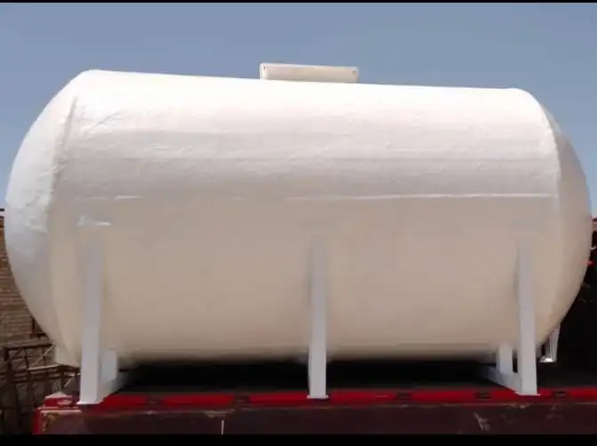

خزانات الفيبر جلاس
الخزان مصنوع من مادة الفيبر جلاس المسلح بالبوليستر المطلى، يتحمل عوامل الجو المختلفة. الخزان ناعم و أملس من الداخل مما يجعله غير قابل لتكوين الطحالب والفطريات لذلك فهو غير ضار على الصحة العامة ويسهل تنظيفه. يتميز بسهوله إصلاحه وإعادته لصورته الأولى عند تعرضه لأي كسر او شرخ. الغطاء مثبت بجسم الخزان بشكل محكم بخامات غير قابلة للصدأ ، وسلسلة لحمايته من الفقد. يتم تجهيز فتحات الخزان بالمصنع طبقا لاحتياجات كل عميل. أماكن خاصة بالأرجل لتثبيت الخزان بالقاعدة الخرسانية. تصنيع الخزانات بمقاسات وخامات خاصة حسب الأغراض المختلفة.
مميزات خزانات الفيبر جلاس
- خفيف الوزن يسهل نقلها من مكان إلى آخر بسهولة.
- يوجد منها أنواع عازلة للحرارة.
- السطح الداخلي مبطن بطبقة الجلكوت البيضاء الخاصة التي تحافظ على مياه الشرب ذات السطح الأملس لسهولة التنظيف.
- الغطاء مثبت بجسم الخزان بأسلوب محكم بخامات غير قابلة للصدأ، وسلسلة لحمايته من الفقد.
- تتميز بالعديد من تصميمات ديكورية رائعة.
- خزانات لديها قدرة ثابتة عالية.
- لديها سطح أملس ناعم من الخارج وتشطيب جيد من الداخل.
- لا يحتاج إلى صيانة دهانات.
- خزانات ذات ألوان ثابتة ومتعددة، ولديها أكثر من 500 لون.
- الخزانات الخاصة بالمواد الكيميائية والأحماض التي لا تتفاعل مع أي نوع آخر من المواد الكيميائية أو الأحماض، وتستخدم في مصانع المواد الكيميائية والأدوية.
- أفضل خزانات مياه مصنوعة من الفيبر جلاس ومطابقة للمواصفات العالمية بسعات تبدأ من 850 لتر وحتى 60 متر مكعب بأشكال مختلفة تناسب جميع الأغراض.